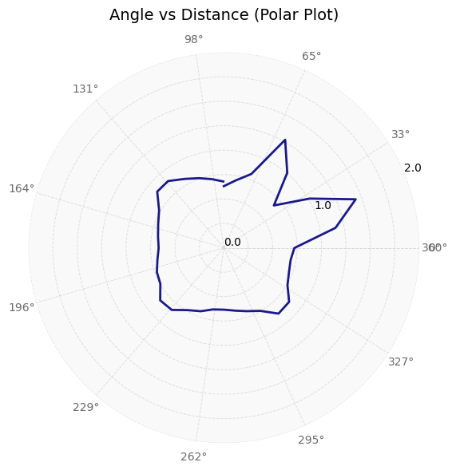
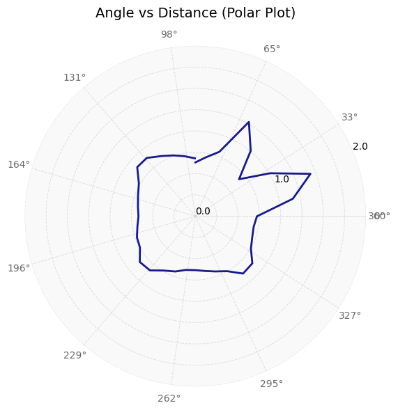

Lab 9
Overview
In this lab, I performed closed-loop orientation control using PID in order to map out a room. I placed my robot at five marked points in the lab, where the robot spun on its axis and collected ToF readings which were used to create the complete map. Through this lab, I learned more about mapping, continued exploring PID control, and learned about transformation matrices.
Orientation Control
Code
In order to create a map of the system, I created a MAPPING command which performed PID control on the robot's orientation. As soon as the robot reached around the desired angle (robot's angle is around 0.5 degrees of desired angle), I stopped the motors, collected ToF data, and incremented the desired angle by 10 degrees. By doing so, I took 37 ToF measurements (360/10 = 36 and another at 360 degrees) at each location in the map.
Since the robot was moving quite slowly and very small increments, I was able to just use P control to perform this computation. This was especially done to avoid having to tune all three PID parameters based on battery levels, carpet vs tiles, etc. In general, a Kp of 1 (Ki, Kd of 0) worked well for my robot.
In order to get the orientation of the robot, I used my DMP code from Lab 6 (orientation control). Since DMP collects angles from -180 to 180 degrees, I added 360 to any DMP angles less than 0 to ensure that I could get data ranging from 0 to 360 degrees, which made control logic easier. My final code is shown below.
Data Collection and Turn Cleanliness
In general, I think my code worked well for this task, as shown in future parts of this report. Since I was using the DMP, I had to ensure that I oriented the robot at the orientation at which the robot was flashed code. This allowed the robot to start at the 0 orientation and execute faster. If I was unable to do so, the first few data points would take time and the result looked like the one below. The angles still converged, but a few data points took longer than expected, which means that the code remained reliable.
As seen above, the actual angle was quite close to the expected angle and this was because I set the acceptable error to be 0.5 degrees which is quite small. I later realized that this may have been the reason that certain angles took longer to converge as well. My PWM values ranged from 80 to 120 in general and I sometimes had to tune them to be higher if my battery was low.
On-Axis Spin
Below is a video that shows my robot turning approximately on axis.
My robot wasn't able to stay at the same point throughout its rotation, but there were instances at which it was able to rotate on axis for a bit of time. On average, I found that my robot deviated from its initial position by about 4 inches. The maximum deviation was around 8 inches. This was likely due to the tape that I used that make the robot's wheels slip quite often. In a 4mx4m square, this means an average error of 4/154.48 = 2.54% and a maximum error of 8/154.48 = 5.08%.
Read-out Distances
For each of the data points at which I collected ToF data, I plot the angle vs time, distance vs time, polar, and transformed plots below. Note that the transformed plots represent the coordinate plane and that the axes are in feet.
Getting Polar Plots
On the python side, after I received the angle, distance, and time graphs from the robot, I used the data to create polar plots. When I collected my data, my robot was pointing in the positive y direction and rotating clockwise. Therefore, I had to invert the angle data (to account for rotation) and add a 90 degree offset to it (to shift to +x-direction). I also converted the distance data from mm to m. Next, I used the matplotlib polar subplot functionality to create a polar graph and formatted it. The final code to do all of this is shown below.
Transformation Matrices
After I had manipulated my angles such that they were converted from clockwise rotation to counter-clockwise rotation and they were relative to the +x-axis, this data could now be used to convert my polar coordinates into cartesian coordinates. This was done by the sine and cosine parts of the transformation matrix. Since my ToF data was not placed in the center of my robot, I had to measure the offset of the sensor from the center of the robot. I found that the ToF sensor was 50mm away from the robot's center in the x-direction and was in the center of the robot in terms of the y-direction. Lastly, I also multiplied the data by 0.00328 which converts the data in mm to ft, which is what the map is in.
The matrices involved in performing this computation are shown in the image below.
The code to perform the transformation is provided below.
Results
(-3, -2)
 

(5, -3)
(0, 3)
(5, 3)
(0, 0)
Data precision
In order to understand how precise my data points were, I collected the (5,-3) data points three times. The results are shown below. Note that the angle and distance vs time graphs are relative to different points in time since the start times were different.
Overall, I think that the data collected is decently precise as the overall structure of the walls that is measured and calculated is similar, as seen in the figure above. The points are also clustered together quite well.
Merging the Readings
Uncorrected Data
In Figure 8 below, I collected all of the transformed data and plotted it onto one graph.
Removing Noise
Since my ToF sensor was set to record shorter distances, it did well with the walls nearby but it had some amount of error when recording the walls further away. Furthermore, since there was only one map in our lab, multiple people recorded data at once so there were robots (and sometimes people walking) at various coordinates. Due to these reasons, as seen in figure 8 above, there were a lot of noisy points in the center of the map. Lastly, by the end of the data collection step, my robot's battery was quite low, which is why one of the wheels was not rotating as much; this caused the data collected to be slightly off, which can especially be seen in the (0,0) data. Therefore, I cleaned the noisy data and the result is shown in Figure 9 below.
In order to clean the data, I essentially created a python script which clusters line segments from a set of data. Then, for each line segment, it removed the outlier datapoints. Doing so ensured that all of the data deletion was performed using a rigorous approach, rather than using my previous knowledge of how the map should look like. I also added the feature that would ensure that the data points that are kept would approximately follow a line with a slope of 0 or a line with a slope of infinity. This ensured that my map would have approximately straight lines.
Line-based Map
After cleaning the data, I was able to see a clear pattern of the walls, which I labeled in Figure 10 below. This will be especially useful when performing localization.
References
I discussed implementation ideas with Annabel and Becky. I also referenced Wenyi's website from 2024 and Professor Helbling's transformation matrix slides.